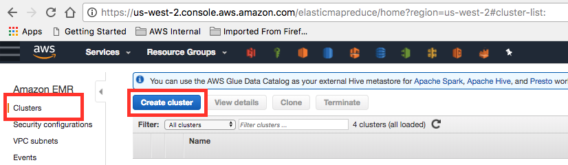
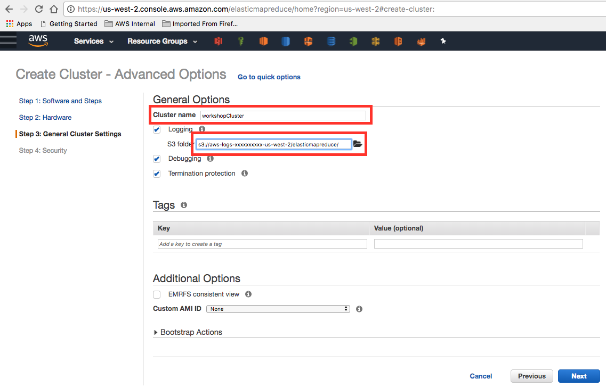
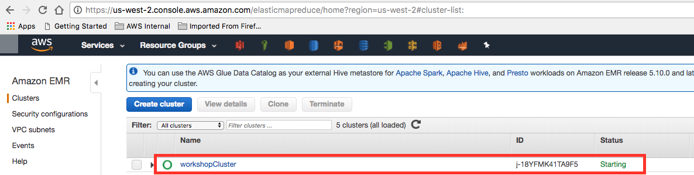
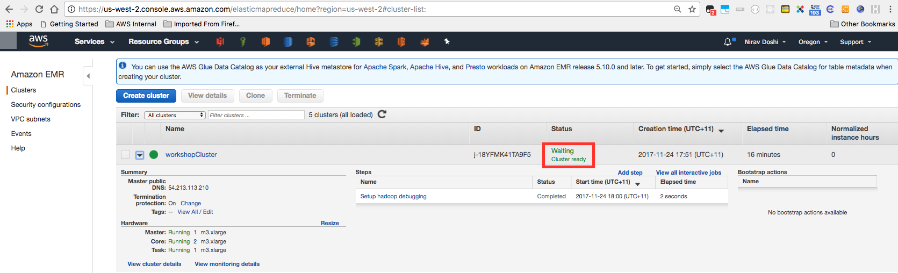
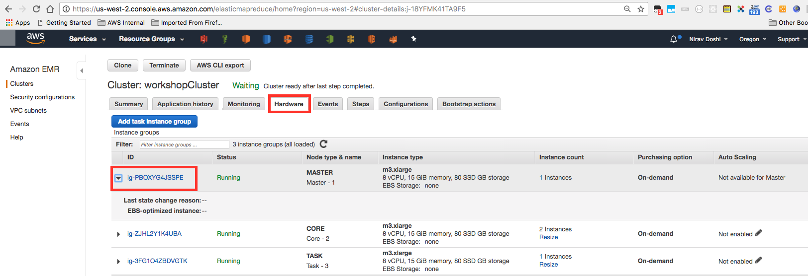
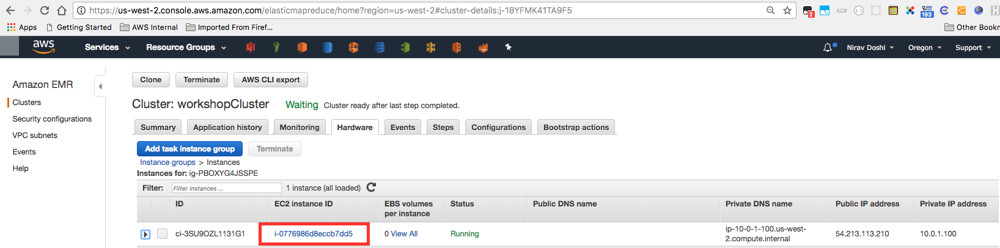
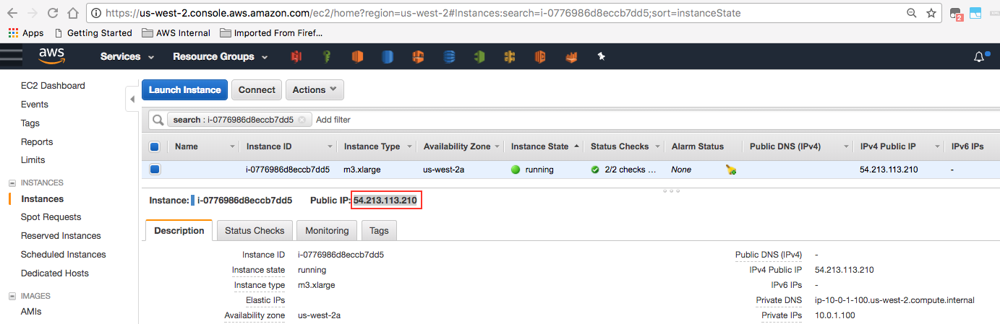
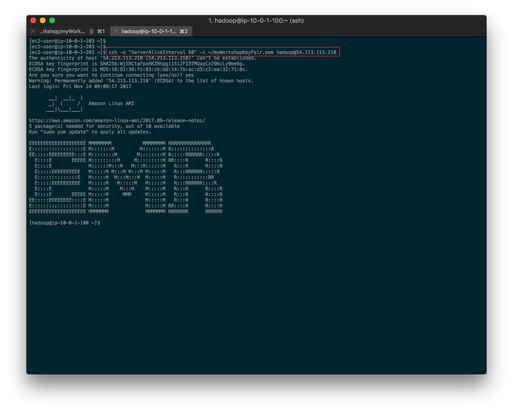
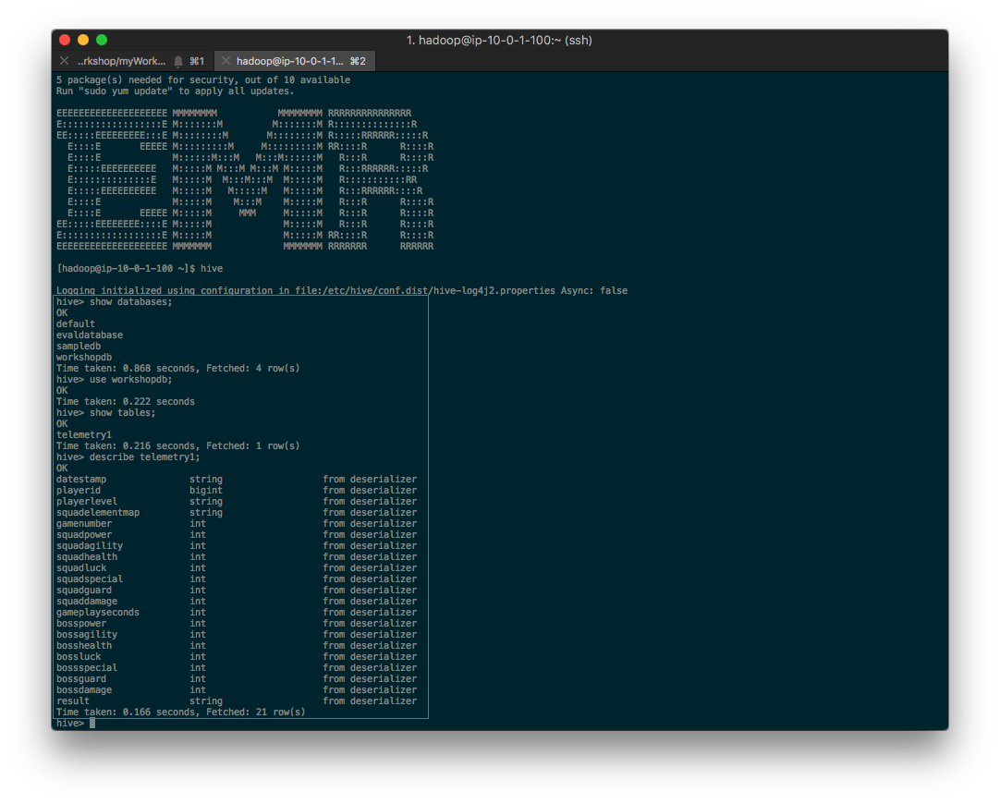
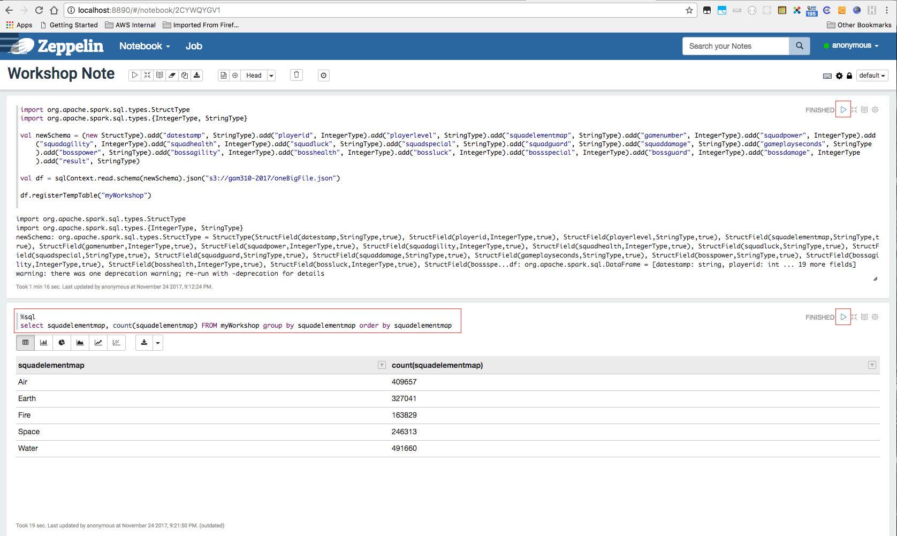

You've now configured 3 different data pipelines. Now we will build your last pipeline using Amazon Elastic MapReduce (EMR) for this workshop, which is the most appropriate solution for processing Big Data sets.
PIPELINE 4 - BIG DATA ANALYTICS
The data pipeline architecture for this lab is shown in the following diagram:

PIPELINE 4 - Big Data Analytics with Amazon EMR
For this lab we're going to use the web console to use Amazon Elastic MapReduce (EMR). Visit the Amazon EMR page at this link. Please follow these instructions:
1. From the "Clusters" on the left, click the "Create Cluster" button

2. Click the "Go to Advanced Options" link there, next to the page title
3. Choose "Release": "emr-5.10.0" in the Software Configuration
4. Enable "Hadoop 2.7.3", "Presto 0.187", "Pig 0.17.0", "Hue 4.0.1", "Zeppelin 0.7.3", "Hive 2.3.1", "Spark 2.2.0". You can choose to enable others there, however we will use these primarily for the guided section of the workshop.
5. Enable the "AWS Glue Data Catalog settings" only for "Use for Hive table metadata".
6. Click on the Next button to proceed to the Hardware configuration
7. Choose the VPC you have been using for the workshop from the "Network" dropdown. Choose any one subnet for the EC2 Subnet dropdown.
8. Review and verify the configuration - It should have an Instance count of 1 for Master Node type, Instance count of 2 for Core Node types and Instance count of 0 for Task Node types. Change the Instance count for Task Node types to 1.
9. Click the Next button to proceed to the General Cluster Settings
10. Provide the "Cluster Name" as "workshopEMRCluster"
11. Ensure you have a logging bucket configured. If no other bucket is available, use the workshop-bucket with a new prefix - like "emrlogs" or similar. Keep a note of the bucket name & the prefix - so you can refer to it and view the logs, if necessary.
12. Click the Next button to proceed to the Security configuration

13. Choose the "myWorkshopKeyPair" from the "EC2 Key Pair" dropdown
14. Open the "EC2 security groups" section. We need to select the Additional security groups for the Master and the Core & Task node types. Edit the "Additional security groups" and select the security group named "EMRSecurityGroup". Perform this change for both the Node types there.
15. Click the "Create cluster" button to start the cluster creation. The cluster should be built for you, and should take at least 11 minutes to complete the creation.
16. From the Cluster Summary screen, click on the "Clusters" on the review the progress from the Clusters dashboard. The Cluster will be ready after the "Status" for the cluster changes to "Waiting - Cluster ready"...


17. After the cluster is in the "Waiting - Cluster ready" like below, click on the cluster name - "workshopCluster" to go to the Cluster Details screen - and click on the "Hardware" tab.

18. Click the Instance Group ID of the Master Node Type, to reveal the EC2 Instance ID of the master node. Click on the Instance ID to be taken to the EC2 Dashboard

19. In the EC2 Dashboard, note the public IP of the Master Node instance

20. ssh in to the master node instance with the command as below. Note carefully, the user-name is "hadoop".
ssh -o "ServerAliveInterval 60" -i ~/myWorkshopKeyPair.pem hadoop@<MasterNodeIPAddress>

21. After logging in to the Master Node instance, issue the command as below.
hive
22. Issue the following commands at the hive prompt, one command at a time and review its output. Note that we did not create any database or tables here, however - AWS Glue has crawled and created the schema for us in Hive because we asked it to in Step 5 above.
hive> show databases;
hive> use workshopdb;
hive> show tables;
hive> describe telemetry1;
hive>

23. Similarly, you can issue SQL commands to hive & query your data lying in the S3. Try a few queries and note that its querying your S3 bucket - the metadata for which has been prepared for AWS Glue.
hive> select count(*) from workshopdb.telemetry1;
hive> select count(*) from workshopdb.telemetry2;
hive> select * from workshopdb.telemetry1 where result='DNF' limit 100;
hive> select * from workshopdb.telemetry2 where result='DNF' limit 100;
hive> select count(*) from workshopdb.telemetry1 where result='DNF';
hive> select count(*) from workshopdb.telemetry2 where result='DNF';
hive> quit;
$
24. Next, launch spark-sql by issuing the command as below.
spark-sql
25. Issue & try the following SQL commands again, one-at-a-time - this time in Spark SQL:
spark-sql> show databases;
spark-sql> create database workshopdb;
spark-sql> CREATE EXTERNAL TABLE IF NOT EXISTS workshopdb.telemetry1 (
`datestamp` string,
`playerid` bigint,
`playerlevel` string,
`squadelementmap` string,
`gamenumber` int,
`squadpower` int,
`squadagility` int,
`squadhealth` int,
`squadluck` int,
`squadspecial` int,
`squadguard` int,
`squaddamage` int,
`gameplayseconds` int,
`bosspower` int,
`bossagility` int,
`bosshealth` int,
`bossluck` int,
`bossspecial` int,
`bossguard` int,
`bossdamage` int,
`result` string
)
ROW FORMAT SERDE 'org.openx.data.jsonserde.JsonSerDe'
WITH SERDEPROPERTIES (
'serialization.format' = '1'
) LOCATION 's3://<bucket-name>/telemetry1/'
TBLPROPERTIES ('has_encrypted_data'='false');
spark-sql> use workshopdb;
spark-sql> show tables;
spark-sql> describe telemetry1;
spark-sql> select count(*) from workshopdb.telemetry2;
spark-sql> select * from workshopdb.telemetry1 where result='DNF' limit 100;
spark-sql> select count(*) from workshopdb.telemetry1 where result='DNF';
spark-sql> CREATE EXTERNAL TABLE IF NOT EXISTS workshopdb.telemetry2 (
`playerid` bigint,
`playerlevel` string,
`squadelementmap` string,
`gamenumber` int,
`squadpower` int,
`squadagility` int,
`squadhealth` int,
`squadluck` int,
`squadspecial` int,
`squadguard` int,
`squaddamage` int,
`gameplayseconds` int,
`bosspower` int,
`bossagility` int,
`bosshealth` int,
`bossluck` int,
`bossspecial` int,
`bossguard` int,
`bossdamage` int,
`result` string
)
ROW FORMAT SERDE 'org.openx.data.jsonserde.JsonSerDe'
WITH SERDEPROPERTIES (
'serialization.format' = '1'
) LOCATION 's3://<bucket-name>/telemetry2/'
TBLPROPERTIES ('has_encrypted_data'='false');
spark-sql> select * from workshopdb.telemetry2 where result='DNF' limit 100;
spark-sql> select count(*) from workshopdb.telemetry2 where result='DNF';
spark-sql> quit;
26. Run the following command and confirm that Zeppelin is running on the Master Node. As you would see, AWS EMR has setup, pre-configured & run the applications we chose to install while setting up the cluster.
ps aux | grep zeppelin
27. Launch Zeppelin in your web-browser by visiting below. Note it runs on TCP port 8890, so launch it appropriately.
http://<MasterNodeIP>:8890/
Note: If you experience any issues connecting to port 8890, follow instructions as below to create a ssh tunnel.
If the TCP port 8890 is blocked for any reason, you can create a SSH tunnel using the Bastion Host as below.
Step 1: ssh -i ~/myWorkshopKeyPair.pem -L8890:<MasterNodeIP>:8890 hadoop@<MasterNodeIP>
Step 2: Now, launch your browser and visit http://localhost:8890 - to launch Zeppelin
28. Click on the "Create new note" in the Zeppelin welcome page. Give it a name as "Workshop Note" & leave the default interpreter as "spark".

29. In the new note, copy the code below and hit the ">" RUN button (next to READY)
import org.apache.spark.sql.types.StructType
import org.apache.spark.sql.types.{IntegerType, StringType}
val newSchema = (new StructType).add("datestamp", StringType).add("playerid", IntegerType).add("playerlevel", StringType).add("squadelementmap", StringType).add("gamenumber", IntegerType).add("squadpower", IntegerType).add("squadagility", IntegerType).add("squadhealth", IntegerType).add("squadluck", StringType).add("squadspecial", StringType).add("squadguard", StringType).add("squaddamage", StringType).add("gameplayseconds", StringType).add("bosspower", StringType).add("bossagility", IntegerType).add("bosshealth", IntegerType).add("bossluck", IntegerType).add("bossspecial", IntegerType).add("bossguard", IntegerType).add("bossdamage", IntegerType).add("result", StringType)
val df = sqlContext.read.schema(newSchema).json("s3://gam310-2017/oneBigFile.json")
df.registerTempTable("myWorkshop")
30. It will take some time to run (1~2 mins), please wait for it to finish & display the "FINISHED" status. After it has FINISHED, you can issue SQL commands like below, at the next prompt below.
%sql
select squadelementmap, count(squadelementmap) FROM myWorkshop group by squadelementmap order by squadelementmap
Run the above script and review the results, the piechart, the graphs.
Another sample query as below:
%sql
select playerlevel, count(playerlevel) from myWorkshop group by playerlevel order by playerlevel

31. Perform further queries on the data, review the results & see the various graphs it creates. The queries are being performed on data (1.7+ million rows) stored on the S3 bucket.
32. After performing all the queries, you should log out of ssh sessions to the Master Node (Command: 'exit')
33. Visit the Amazon EMR dashboard at
this link.
34. From the "Clusters" list, select the "workshopCluster" and hit the TERMINATE button to initiate destroying the cluster. As we have enabled the "Termination protection", the cluster will display a warning. Choose the "Off", and click the GREEN Tick to Save disabling of the Termination Protection.
35. Finally, click the Terminate button and Amazon EMR will now initiate the destruction of the cluster.
CLEANING UP YOUR ENVIRONMENT
You've created a lot of things in your account! Let's clean them up so you don't keep paying for them.
Please replace ${WorkshopBucket} below with your "WorkshopBucket" Output from your CloudFormation Stack.
# Delete QuickSight account, Athena Hive DB, Kinesis Analytics, Athena Query Results buckets, then run the following cleanup commands from your Bastion Host:
cleanupPipeline1Infra.sh
exit
# And then run the following command from your local machine
aws cloudformation delete-stack --stack-name GamingWorkshopStack --region=us-west-2